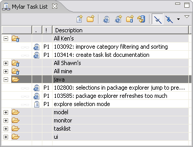

New context menu actions

The Mylar Task List provides methods for creating and maintaining tasks
and bug reports. In the order that they appear on the toolbar, the
Task List provides the following features work managing task and bug
reports:
|
 |
A task can be created with a description and a priority level. The priority level can be varied from P1 through P5 which is used for sorting and filtering the Task List. A task can be set to complete by right clicking and selecting "Mark Complete". The completed tasks appear in the Task List with light gray font to distinguish it from incomplete tasks. More detailed information such as notes and related links can be added to the task by double clicking on the task, which will open an editor. A task can be activated by selecting the glasses icon in the first column, which will initiate the monitoring feature of mylar to store the task context. The active task and its category will appear in bold on the task list. The context stored for each task can be cleared by right clicking the task and selecting "Clear Task Context".
A category can be created to organize the Task List. If a category is selected during task creation, the task will be added to that category. The drag and drop feature of the Task List allows tasks and bug reports to be moved from one category to another.
Bugzilla reports can be added to the Task List via two methods. An existing bug report can be downloaded from a bugzilla server or a new bug report can be created on a bugzilla server. The Task List shows the same details for the bug report as it does with tasks, but the icons are different. When the bug report is double clicked, the bug report will be opened by a bugzilla editor or an internal browser, which can be toggled in the preferences. A bugzilla report can be activated in the same manner as tasks.
A bugzilla query is a category that is made up of all bug reports that match a specified query. When it is created, the user is presented with a dialog that presents query options similar to the search page on the bugzilla server. All hits form the query are added to the query and can be used like standard bug reports.
Filters are available to manage the Task List. There are two filters, one for filtering completed tasks, and one for filtering based on priorities.
|
New context menu actions |
The task list now contains
actions for collapsing all nodes, navigating, and specifying
preferences for file closing behavior on task activation.
|
|
|
|
|
Focus on a single task category |
To see only the tasks for a single category
select the "Go Into Category" action from the context menu. To
go back to viewing all tasks and categories under the root use the
"Go Up To Root" action in the Task List's toolbar pull down menu
(visible above).
|
|
|
|
Task history navigation |
Navigate between previously
activate tasks using the Task List view's pull down menu (upper
right-hand corner of the toolbar).
|
|
|
|
|
Quick filter |
To filter task by name or
regexp type the filter text into the field and all matched tasks
will display. Note that this will temporarily suppress all
other filters. To clear the query press the "x" button to the
right of the text field.
|
|
|
|
|
Context highlighters |
You can associate a task with a highlighter. This can be useful if
you are using Mylar without the filtering support. It also
allows you to distinguish between task contexts if you have multiple
tasks active.
|
|
|
|